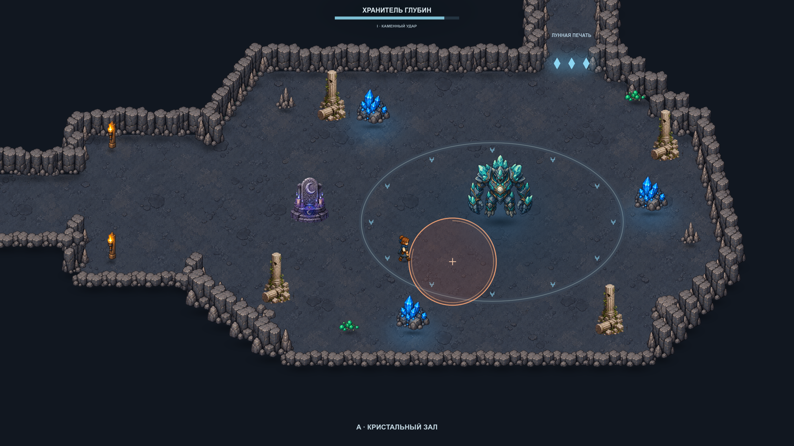

Проектный макет · существующие спрайты
Арена Хранителя глубин
Два варианта конечной комнаты лабиринта. Рекомендую A: просторный каменный зал позволяет хорошо видеть предупреждения и свободно обходить босса. Бой, награды и миграция сохранений описаны как предложение для последующей реализации.

Бой по желаниюАлтарь пробуждает Хранителя. Вход в комнату даёт время подготовиться; через левый туннель можно отступить.
Две понятные фазыОдиночный отмеченный удар сменяется двумя последовательными обвалами. После атаки предусмотрена передышка.
Победа открывает путьПечать гаснет, появляется сундук награды. Победа и сюжетная реликвия сохраняются и не выдаются повторно.
Макет создан в Godot на текущих отдельных спрайтах. Основная игра ещё использует прежнее святилище. Параметры боя и план переноса · Сравнить оба варианта